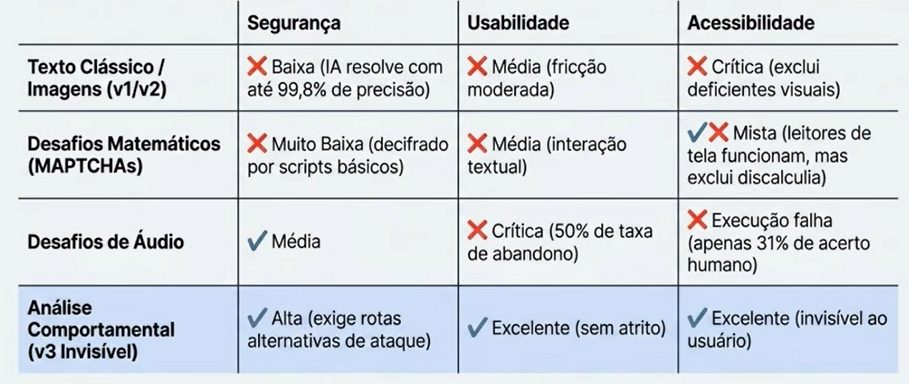

Tudo sobre Criptografia e Segurança Parte 9
O que é Captcha e Como Ele Protege Websites Contra Bots e Ataques
Ao navegarmos pela web, podemos encontrar coisas como Selecione Todas as Imagens com Táxis
, Arraste esse Objeto para o Objeto Semelhante
ou Resolva um Problema Matemático
ou simplemeste pedindo pra clicar num local escrito Não Sou um Robô
. Isso são os captchas.
O captcha é um sistema de segurança e autenticação projetado para diferenciar visitantes humanos de robôs (bots) na internet.
A sigla significa Completely Automated Public Turing test to tell Computer and Humans Apart
(Teste de Turing Público Completamente Automatizado para Diferenciar Computadores e Humanos). Por ser um teste de computador para confirmar a humanidade do usuário, é frequentemente descrito como um teste de Turing reverso
.
Sua principal função é proteger sites e formulários web contra atividades maliciosas automatizadas. Faz isso apresentando um desafio que é relativamente simples para um ser humano resolver, mas altamente complexo para uma máquina interpretar.
Os captchas servem para:
- Prevenção de Spam: Bloqueio de inundações automatizadas em fóruns, formulários e avaliações, evitando envenenamento de SEO.
- Combate à Força Bruta: Proteção da camada de autenticação contra scripts de repetição que testam milhares de senhas roubadas por segundo.
- Integridade de Inventário: Impedimento do cambismo digital, garantindo que estoques limitados e ingressos cheguem a clientes reais.
- Bloqueio de Contas Falsas: Prevenção da criação em massa de perfis que distribuem malwares ou distorcem votações online.
Em ações como login, cadastro ou compra, o site pode acionar um teste para verificar se há um humano do outro lado:
- Captchas de Texto: O usuário precisa ler letras e números distorcidos. A ideia é dificultar a leitura automática por softwares de OCR.
- Captchas de Imagem: O teste pede a seleção de objetos específicos, como semáforos, gatos ou faixas de pedestres, em fotos ou blocos de imagem.
- Análise de Comportamento e Risco: Sistemas modernos observam cookies, histórico do dispositivo e movimentos do mouse. Às vezes basta marcar
Não Sou um Robô
, ou o teste ocorre de forma invisível.
Para que um texto distorcido derrote uma máquina, ele exige três habilidades cognitivas simultâneas que os computadores tradicionalmente têm dificuldade em processar:
- Reconhecimento Invariante: A capacidade humana de identificar letras independentemente de rotações pesadas, arcos, fontes obscuras ou variações extremas de forma.
- Segmentação: A separação visual de caracteres sobrepostos ou fundidos. Historicamente, bots tentavam cortar a imagem em partes iguais, o captcha colapsa as letras para impedir isso.
- Parsing (Análise Holística): A compreensão do conjunto como um todo, usando o contexto visual para deduzir caracteres individuais, mesmo quando altamente corrompidos.
Essa é a linha do tempo dos captchas, da distorção de texto aos sistemas invisíveis guiados por IA:
- Anos 1980 a 2001 (Precursores e Primeiros Testes): Leetspeak e textos distorcidos surgiram para dificultar a leitura automática. Entre 1996 e 2001, experiências da DEC, Sanctum, AltaVista, idrive.com e PayPal ajudaram a consolidar os primeiros testes anti-bot.
- 2003 (O Nome Captcha e o Yahoo): Pesquisadores da Carnegie Mellon criaram o termo captcha. A solução foi aplicada para conter contas falsas no Yahoo com letras aleatórias distorcidas.
- 2007 a 2009 (ReCaptcha v1 e a Digitalização): O ReCaptcha v1 passou a proteger sites e, ao mesmo tempo, ajudar na digitalização de livros e jornais. Em 2009, a tecnologia foi comprada pelo Google.
- 2012 a 2014 (Imagens e a Caixa
Não Sou um Robô
: Com a IA lendo textos distorcidos com alta precisão, o Google adotou desafios de imagens. Em 2014 surgiu o ReCaptcha v2 com a caixa Não Sou um Robô
e análise comportamental.
- 2018 aos Dias Atuais (ReCaptcha v3 e a Era Invisível): O ReCaptcha v3 funciona em segundo plano, sem caixas ou imagens. O sistema atribui uma pontuação com base no comportamento do usuário.
As principais versões de captcha são essas, veja como cada uma delas funcionam:
- Texto (ReCaptcha v1): Usa caracteres distorcidos para diferenciar humanos e também ajudou na digitalização de documentos físicos.
- Imagem: Pede a identificação de objetos específicos em fotos, sendo uma alternativa comum em celulares e navegadores.
- Áudio: Oferece acessibilidade com sequências audíveis, mas costuma ter alta taxa de desistência por sua complexidade.
- Problemas Matemáticos ou Lógicos (Maptcha): Usa contas simples ou desafios lógicos. É acessível, mas vulnerável a bots básicos.
- ReCaptcha v2: Analisa comportamento, IP e digitação, exibindo desafio visual apenas quando há suspeita de automação.
- ReCaptcha v3 (Invisível): Funciona em segundo plano e atribui uma pontuação de risco de 0,0 a 1,0 com base no comportamento do usuário.
- Login via Redes Sociais: Usa contas como Facebook ou Linkedin para validar a identidade por meio de perfis já existentes.
Veja a matriz comparativa:

Essas são algumas desvantagens dos captchas:
- Experiência do usuário (UX) prejudicada e queda nas conversões.
- Problemas graves de acessibilidade e exclusão.
- Burla por meio de fazendas de captcha.
- Invasão de privacidade e falta de transparência.
- Vulnerabilidade aos avanços da inteligência artificial.
- Ameaças com falsos captchas.
Essas são as alternativas para deficientes visuais:
- Captchas de áudio.
- Problemas matemáticos (maptchas) e de lógica.
- Problemas de palavras.
- Login via redes sociais.
- Verificação invisível baseada em comportamento (ex: ReCaptcha v3).
Sobre o ReCaptcha v3: Lançado pelo Google em 2018, o ReCaptcha v3 verifica se o usuário é humano de forma invisível, sem exigir cliques ou desafios. Funciona por meio de:
- Monitoramento em Segundo Plano: Sistema integrado com uma API Javascript que atua silenciosamento durante a navegação.
- Análise de Risco via IA: O sistema avalia interações, como movimentação do mouse, velocidade de digitação, histórico, cookies e endereço IP.
- Sistema de Pontuação (Score): Com base no comportamento, a IA atribui um score de risco de 0,0 (probabilidade de ser robô) a 1,0 (probabilidade de ser humano).
Essa é a anatomia de risco:
- Movimento do Mouse: Análise da trajetória geométrica. Humanos são caóticos e imperfeitos, robôs calculam rotas diretas.
- Velocidade de Digitação: Avaliação da cadência e do ritmo natural nas interações com o teclado.
- Histórico do Dispositivo: Reconhecimento de fingerprint de hardware e software do usuário.
- Cookies e IP: Avaliação da reputação de navegação prévia e dados de geolocalização.
Ação: O site recebe a nota silenciosamente. Ações automatizadas (como exigir autenticação de múltiplos fatores ou moderação manual) são acionadas apenas para pontuações perigosamente baixas.
Sobre as fazendas de captchas:
São operações clandestinas ou serviços comerciais que utilizam trabalho humano terceirizado e de baixo custo para decifrar e burlar os sistemas de segurança da internet. Principais características desse mercado:
- Trabalho precário e custo muito baixo.
- Empresas especializadas.
- Facilidade de integração para cibercriminosos.
Quando os algoritmos falham, o submundo cibernético recorre ao trabalho humano terceirizado, pagando pessoas para provarem que um robô é humano:
- Custo Irrisório: Spammers pagam apenas entre US$ 0,50 e US$ 1,00 para cada 1000 testes decifrados manualmente por trabalhadores de baixíssima renda.
- Infraestrutura Comercial: Plataformas fornecem APIs abertas para que hackers integrem essa força de trabalho humana diretamente em seus scripts de invasão, em tempo real.
Os bots e hackers burlam captchas das seguintes formas:
- IA e Aprendizado de Máquina: Modelos treinados com respostas humanas aprendem a decifrar textos distorcidos e a reconhecer objetos em imagens com alta precisão.
- Fazendas de Captcha: Quando a automação falha, operadores humanos resolvem os testes por centavos, muitas vezes integrados a bots por meio de APIs.
- Falhas de Implementação: Sites inseguros podem expor respostas, reutilizar sessões ou validar o captcha no lado do cliente, facilitando a fraude.
- Sequestro do Teste: O invasor repassa o captcha para outra página e usa a resposta dada por um humano para liberar o bot no site alvo.
- Engenharia Social com IA: Bots conversacionais podem persuadir pessoas a resolver desafios, explorando confiança e inventando justificativas plausíveis.
A IA pode resolver captchas. O paradoxo: Humanos treinam as máquinas a vencer os testes:
- Treinamento pelos Usuários: Cada captcha resolvido por pessoas gera exemplos que alimentam algoritmos de aprendizado de máquina. O teste valida o acesso e, ao mesmo tempo, ensina a IA.
- Deep Learning: Com grandes volumes de dados, sistemas de IA aprenderam a reconhecer textos distorcidos e objetos em imagens com alta precisão, superando muitos formatos clássicos.
- Automação de Ataques: Hackers e pesquisadores combinaram IA com falhas de design e ferramentas já existentes para automatizar a resolução de vários captchas.
- Problemas Difíceis de IA: Os captchas exploram tarefas que eram difíceis para máquinas. Quando a IA passa a resolvê-las, ela também avança em visão computacional e reconhecimento de padrões.
- ReCaptcha v3: Até aqui, a barreira principal é comportamental. O ReCaptcha v3 atua em segundo plano, usa pontuação de risco e dificulta o treinamento direto por IA porque quase não oferece desafios visuais.
Para implementação técnica, devemos primeiro, obrigatoriamente, obter credenciais no painel gerando a chave de site (pública) e a chave secreta (privada), depois é só seguir um desses passos:
- Via CMS (Ex: Wordpress):
- Instalação de plugin nativo (ex: Google Captcha).
- Vínculo das chaves (site/secreta) nas configurações globais.
- Mapeamento de alvos: Selecionar blindagem na página de login, checkout e redefinição de senha.
- Via Código Customizado:
- Client-Side (Front-End): Incorporar script Javascript usando a chave de site para invocar o módulo invisível.
- Server-Side (Back-End): Capturar o envio do formulário, enviar requisição aos servidores via chave secreta e aguardar a validação do score.
O futuro é transparente: A era dos quebra-cabeças cognitivos acabou. A segurança do futuro não bloqueia o que vemos, ela monitora silenciosamente como nos comportamos:
- Fim do Atrito: A segurança cibernética eficiente não pode mais depender de interromper a navegação legítima.
- Biometria Comportamental: A humanidade não precisa provar quem é, nossos padrões orgânicos já são a nossa maior assinatura.
- Extinção Visual: Nos próximos anos, os desafios interativos serão completamente substituídos por verificadores analíticos invisíveis.